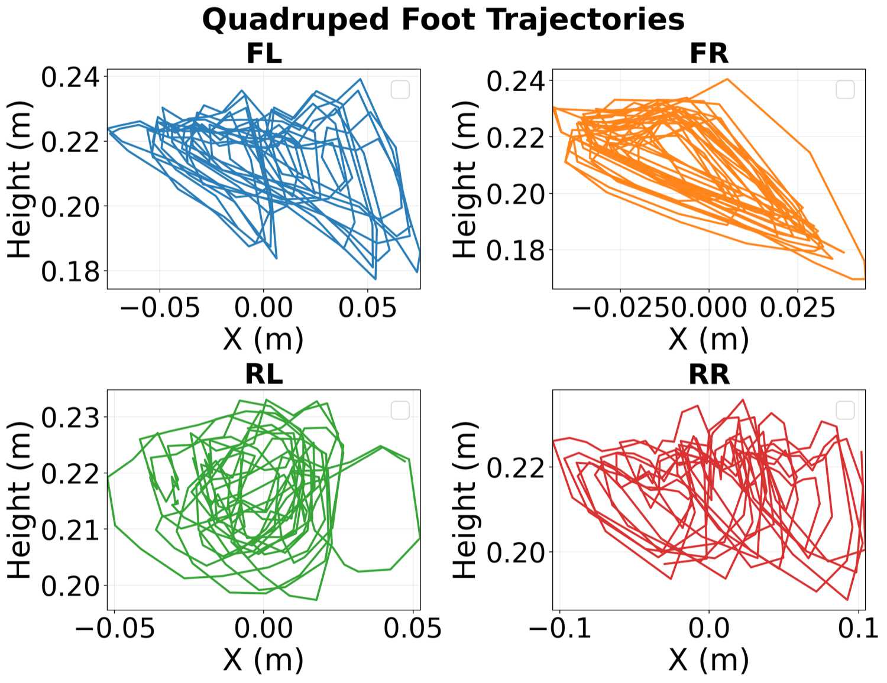

Simulation
Simulation Results
MPC-Injection selects qualitatively different locomotion basins from vanilla RL under identical task rewards, with 25% the injection ratio that most reliably induces the controller's basin.
Walker
Under the same velocity-tracking reward, pure RL converges to a grounded scooting strategy that drags the top of the torso along the ground, while 25% MPC-Injection learns an upright, periodic gait matching the MPC behavior.
0% MPC-Injection (pure RL)
25% MPC-Injection
Quadruped
Pure off-policy RL learns to vibrate the joints, while 25% MPC-Injection learns a structured trot with periodic footstep patterns.
0% MPC-Injection (pure RL)
25% MPC-Injection

(a) Pure RL

(b) 25% MPC-Injection
(a) Footstep trajectories under pure RL show chaotic, irregular patterns. (b) Footstep trajectories under 25% MPC-Injection show structured, periodic patterns matching a trotting gait.
Barrel Roll
Under the same simple reward function, pure RL never discovers the maneuver, while 25% MPC-Injection completes the roll — a behavior that normally requires reward shaping or assistive forces during curriculum learning.
0% MPC-Injection (pure RL)
25% MPC-Injection